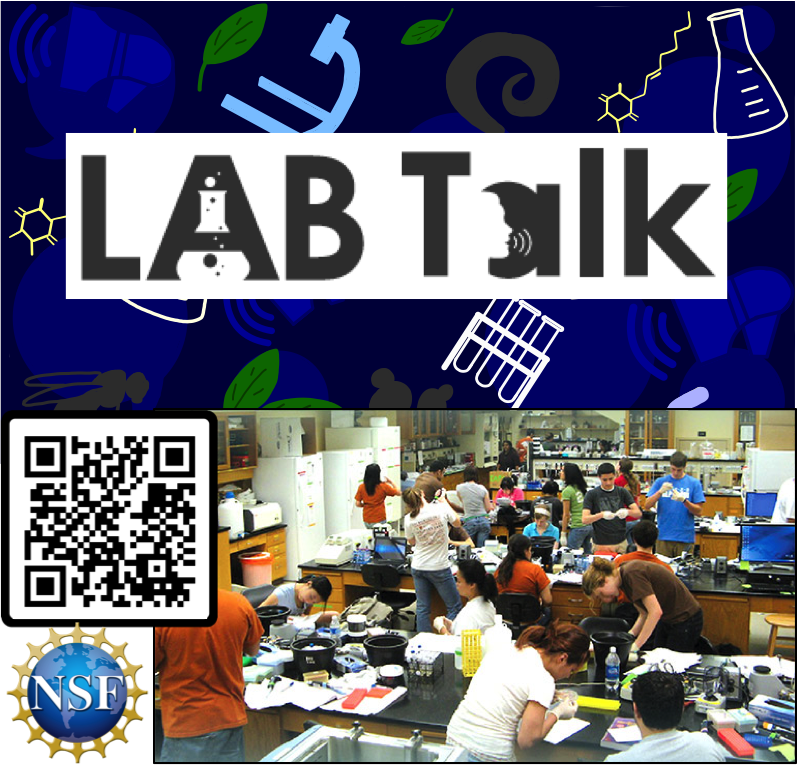

Lab Talk is a study focused on understanding how instructors talk with students in life science laboratory courses and how their talk influence students’ development. This study is funded by the National Science Foundation.
JOIN national efforts to improve undergraduate laboratory instruction in the life sciences by making audio recordings of at least four (4) sessions as you teach your lab course and distributing pre/post surveys to students.
MAXIMIZE the effectiveness of lab courses for future students.
EARN $50 and a personalized report of your results compared to other participants in the study as compensation for your valuable time.
FAQs
1. Why should I participate? Your participation may provide useful information to you about the kinds of things you say to students and how what you say may be related to your students’ outcomes. Your participation may also benefit future lab instructors for thinking about how they talk with students.
2. What will I get out of it? As compensation for your time, you will be provided with a $50 gift card (Amazon, Chipotle, or Starbucks – your choice!) and a personalized report of your results compared to the results for all 50 instructors involved in the study.
3. What would I have to do to participate in the Lab Talk study? Instructors are asked to make audio recordings of at least four (4) sessions of a lab course you teach during fall 2022 and distribute a pre and post survey to students enrolled in your course.
4. What if my students are nervous about being recorded? We are interested in what instructors say to students; as soon as the audio recording is received, we make a transcript and we analyze what the instructor says (not what students say). Once the analysis is complete, we destroy the recording and no student identifiers are kept once data are matched. In addition, your students will receive information about the study at the start of the pre-course survey and will have their own consent information and procedures. They will be able to opt in or out of the study. Your decision to participate does not obligate them to do so. Your students will also be compensated for their time and will receive a $20 gift card after completing both pre and post surveys.
5. What if I’m nervous about being recorded? We are not evaluating your teaching or making any judgments about your effectiveness as a teacher. Rather we are looking across the whole group of instructors in the study to relate what instructors say as a group to students’ scientific development. In fact, as soon as an audio recording is received, we make a transcript and no instructor identifiers are kept, so we don’t even know which data are yours when we are doing the analysis.
Sign-up!
Find more details about the study and complete the interest form here.
Questions? Please feel free to email us: CJ Zajic (CJZajic@uga.edu), Erin Dolan (eldolan@uga.edu), Jeffrey Olimpo (jtolimpo@utep.edu), and Kelly Subramanian (ksubramanian@ucdavis.edu).